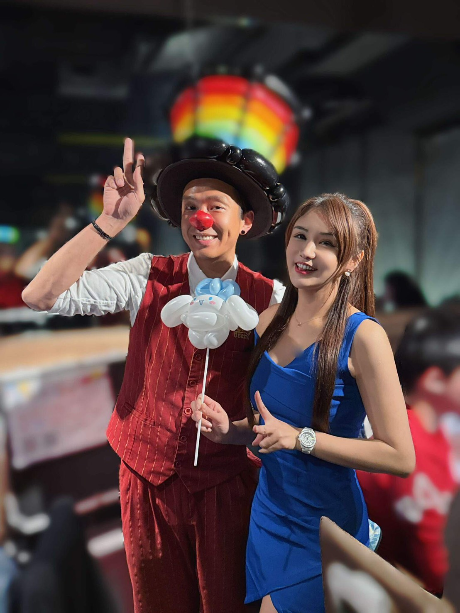
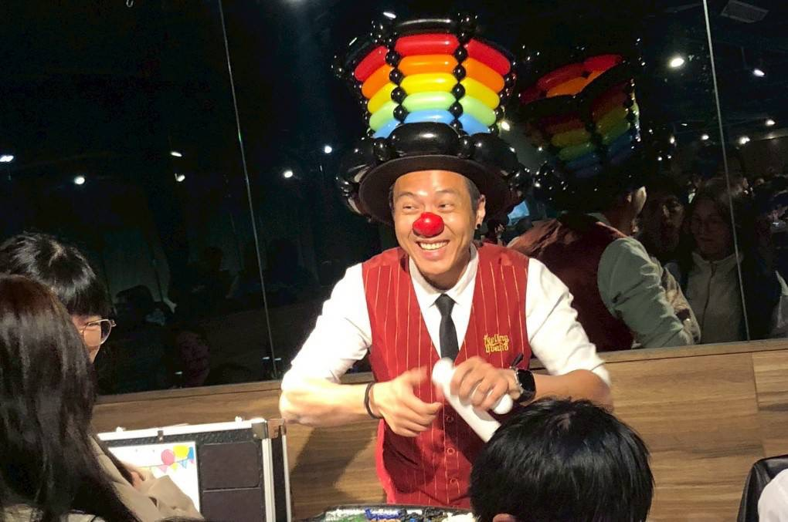

台北尾牙氣球表演｜益網科技尾牙宴，新東南海鮮餐廳超人氣互動
科技大廠尾牙首選！造型氣球與歡笑聲點亮年終派對
📍 地點：新東南海鮮餐廳 松山店
隨著年終將至，尾牙的慶祝氛圍也越來越濃厚。這次非常榮幸受到 皇朝國際旅行社股份有限公司 的專業邀約，來到台北知名的 新東南海鮮餐廳（松山店），為 益網科技股份有限公司 的尾牙宴會擔任造型氣球表演嘉賓。新東南的空間寬敞且充滿傳統海鮮名店的氣派感，與科技公司充滿活力的員工背景相結合，現場氣氛非常熱烈！

專業搭檔與驚喜細節：大耳狗與燦爛笑容
在這次的活動中，我與專業主持人 倪倪 共同合作。倪倪優秀的控場能力讓活動流程順暢無比，而我則負責用氣球「魔法」滿足大家。當我把剛完成的可愛「大耳狗（Cinnamoroll）」氣球遞給倪倪時，現場的女性同仁與孩子們都忍不住驚呼：「太可愛了！」
造型氣球不只是表演，更是一種連結人的媒介。在海鮮餐廳熱鬧的圓桌間穿梭，我堅持帶著最燦爛的笑容，為每一位賓客親手製作專屬作品。無論是可愛的卡通明星，還是充滿祝福的節慶飾品，每一根氣球在扭轉之間都承載著益網科技對員工們一整年辛勞的感謝。

尾牙活動的靈魂：互動與聚客
尾牙除了美食，最重要的就是讓同仁們感受到放鬆與快樂。科技公司的工程師們平時工作嚴謹，但在看到氣球作品誕生的瞬間，每個人都露出了孩子般的純真笑容。造型氣球的流動性服務，成功填補了宴席間的空檔，讓整場尾牙從頭到尾都沒有冷場。
"這次真的很謝謝 Sony 大叔！旅行社推薦過來的時候我們就很期待，現場看 Sony 動作俐落且笑容滿面，大耳狗真的折得太精緻了，連主持人都說要私藏！讓我們的尾牙更有層次感了。"
💡 關於台北尾牙氣球表演的常見問題
- Q: 台北地區科技公司尾牙預約氣球表演，通常建議在哪個時段進行？
- A: 針對台北企業尾牙，我通常建議在『賓客入席期』或『開席後的用餐時間』進行。造型氣球的流動式服務可以穿梭在圓桌之間，有效填補上菜空檔，讓工程師同仁與家屬在輕鬆的氣氛中互動，避免致詞時間過長導致的冷場，同時也能作為摸彩環節前的熱場利器。
- Q: 在新東南這種熱鬧的海鮮餐廳辦尾牙，空間有限會影響氣球表演嗎？
- A: 完全不會！氣球大叔 Sony 具有豐富的台北餐廳表演經驗，造型氣球服務最大的優勢就是『高靈活性』。大叔會自備整潔的隨身氣球裝備，不需要佔用大面積舞台，只要有一條小通道就能提供服務。即便是桌次較滿、人潮擁擠的環境，我依然能透過燦爛笑容與俐落動作提供高品質互動。
- Q: 企業尾牙可以要求製作特定如『大耳狗』這類精緻的造型氣球嗎？
- A: 當然可以！我非常擅長將複雜的 IP 角色如大耳狗、寶可夢或迪士尼人物，轉化為現場可快速製作的精緻造型。這種高水準的折氣球技術能顯著提升尾牙的質感，讓同仁感受到福委會籌辦活動的用心。建議可於預約時告知活動主軸，我會預先準備相應色系的氣球材料以利現場呈現。
🏢 正在籌備企業尾牙、春酒或品牌活動嗎？
讓福委會與公關公司輕鬆好交差！除了現場超高人氣的專屬氣球派送，大叔更提供專為企業量身打造的整合企劃：
- 👉 需要完整的聚客與互動流程？ 請參考：企業家庭日 / 品牌活動整合方案
- 👉 只想單純預約熱鬧的氣球發送？ 請參考：精緻造型氣球派送與互動
📅 本文整理於 2026-01-18，完整紀錄益網科技尾牙真實活動現場氛圍。